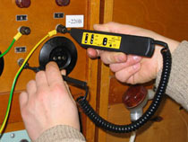

Указатель напряжения двухполюсный универсальный УНН "Комби"

Указатель напряжения двухполюсный универсальный УНН "Комби" со звуковой и световой индикацией предназначен для контроля напряжения в цепях постоянного тока до 500 В и переменного тока частотой 50 Гц до 380 В при работе в электроустановках.
УНН "Комби" может быть использован в качестве однополюсного для определения фазных проводов.
Указатель напряжения универсальный УНН "Комби" позволяет проводить следующие операции:
- определение фазного и нулевого проводов;
- оценку уровня переменного напряжения (12, 220, 380 В);
- определение наличия и полярности постоянного напряжения;
- проверку целостности ("прозвонку") электрической цепи,
- проверку диодов.
Порядок применения УНН "Комби" смотрите в Руководстве по эксплуатации (РЭ).
Особенности применения
- УНН "Комби" не имеет переключателей режимов работы, оснащён устройством самоконтроля работоспособности. При отсутствии элемента питания УНН "Комби" сохраняет функции проверки наличия напряжения, определения рода тока, нахождения фазного провода.
- Наличие и уровень напряжения или его отсутствие с помощью УНН "Комби" определяется по свечению индикаторов уровня напряжения "~12 В", "~220 В", "~380 В" и звуковой сигнализации. При отсутствии напряжения ни один из индикаторов уровня не горит.
- Индикаторы, обозначенные знаками "+" и "-", позволяют определить род тока и полярность постоянного напряжения. Одновременное свечение обоих индикаторов указывает на наличие переменного напряжения.
- При использовании указателя УНН "Комби" в качестве однополюсного для определения фазных и нулевого проводов в цепи переменного тока, контактный наконечник указателя должен касаться контролируемого провода, а палец руки оператора следует расположить на металлическом контакте, находящемся на боковой поверхности корпуса указателя.
- При "прозвонке" электрической цепи в случае наличия гальванической связи (целостности) срабатывают световой и звуковой индикаторы.
- При работе с указателем необходимо руководствоваться настоящим РЭ и документом "Правила применения и испытания средств защиты, используемых в электроустановках, технические требования к ним".
Характеристики:
| Напряжение индикации не более, В | 12 |
| при определении фазного провода, не более, В | 90 |
| Питание указателя, один элемент R6-UM-3 AA, В |
1,5 |
| Масса указателя не более, кг | 0,2 |
| Длина соединительного провода, не менее, м |
1,0 |
| Индикация режимов работы | световая, звуковая |
| Температурный диапазон, °С | 0 ... +40 |
| Срок службы, год, не менее | 6 |
Разработка и сертификация

Разработан и изготавливается Научно-производственным центром "Электробезопасность", г. Киров. Все права разработчика и изготовителя защищены на территории РФ. Подделка запрещена.
Указатель напряжения УНН "Комби" соответствует требованиям ГОСТ 20493-2001 и ТУ 4224-014-49618964-2008 и сертифицирован (Декларация о соответствии № ТС N RU Д-RU.ГА02.В.04495 от 19.10.2016 г.) .
Гарантийный срок эксплуатации УНН "Комби" - 2 года со дня отгрузки с предприятия-изготовителя.